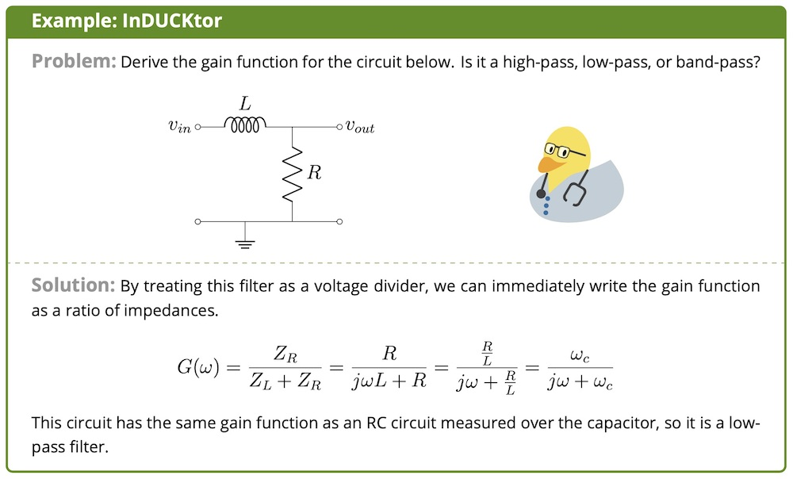
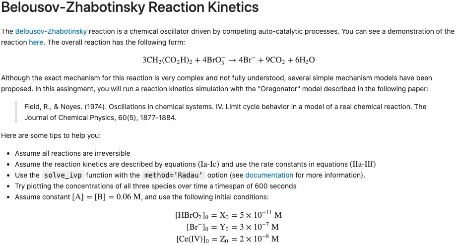

I lead the quarterly CSE 590 U ubiquitous computing research seminar, which meets weekly to discuss academic papers in human computer interaction, wearables, novel sensing, and pervasive computing.
In Autumn 2019 I co-instructed the BIOEN 217 MATLAB Fundamentals for Bioengineers seminar, which introduces programming in MATLAB to students from a variety of backgrounds with biomedically relevant examples. I prepared and delivered lectures, graded coding assignments, and supported course development.

I am writing a course companion text for BIOEN 316 Signals and Sensors for Bioengineers. Topics include biosignal acquisition, Fourier analysis, digital and analog filtering, and linear systems. All of the document's text, equations, and figures are typeset pure LaTeX. The book is currently over 130 pages long.

I worked with a University of Washington chemistry professor to create Python programming jupyter notebook worksheets to accompany homeworks and labs for the CHEM 155 honors general chemistry curriculum. The worksheets and answer keys are freely available to educators. Topics include root finding, reaction kinetics simulations, quantum wavefunction visualizations, and scientific computing.
CodeI worked with a University of Washington bioengineering professor to write a brief commentary on the definition of linear time-invariant systems with feedback to provide clarity on a subtle point in the BIOEN 326 Bioenginering Systems and Control course.
PaperI have volunteered as a student representative on the Bioengineering Department Curriculum Committee since Autumn 2018. I was selected to meet with evaluators for the 2019 ABET accreditation of UW Bioengineering and Computer Engineering programs.